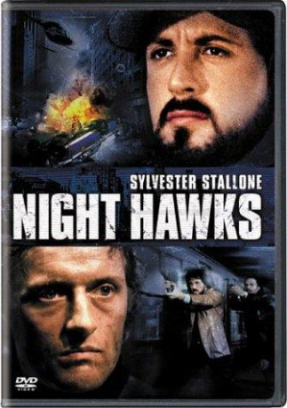

#3623 Nachtfalken
Alternativ: Nighthawks
 
 IMDB-Wertung: 6.4 / 10
IMDB-Wertung: 6.4 / 10  Metascore: 0
Metascore: 0 
Zwei New Yorker Kriminalbeamte einer Spezialeinheit, DaSilva und Fox haben den Auftrag, einen der gefürchtesten internationalen Terroristen, Wulfgar, zur Strecke zu bringen. Wulfgar ist ein gefühlloser Killer, der nur für Geld arbeitet, gerade in London ein Kaufhaus in die Luft gejagt hat und jetzt in New York einen Anschlag gegen UNO - Deligierte angekündigt hat. Der Anschlag gelingt mit einer Komplizin, Shakka. Einige Deligierte sind als Geiseln in den Händen der Terroristen. In einer dramatischen Aktion gelingt es DaSilva zwar die Geiseln zu befreien und die Komplizin Shakka zu töten, doch Wulfgar entkommt. Im letzten Unterschlupf findet DaSilva allerdings eine erfolgversprechende Spur .....
Jahr: 1981
Dauer: 95 Minuten
FSK: 16
Land: USA Studio: Universal PicturesTonspuren: DD2.0 - ,
Untertitel: Deutsch,
Auflösung: 1080p (1920x1040) Größe: 8253 MB
Genre: Action, Thriller, Krimi
Regisseur: Bruce Malmuth, Gary Nelson
Drehbuch: Steve Bing
Soundtrack:
Darsteller:
 Sylvester Stallone als Deke DaSilva
Sylvester Stallone als Deke DaSilva Billy Dee Williams als Sgt. Matthew Fox
Billy Dee Williams als Sgt. Matthew Fox- Lindsay Wagner als Irene
- Persis Khambatta als Shakka Holland
 Nigel Davenport als Peter Hartman
Nigel Davenport als Peter Hartman Rutger Hauer als Heymar 'Wulfgar' Reinhardt
Rutger Hauer als Heymar 'Wulfgar' Reinhardt Joe Spinell als Lt. Munafo
Joe Spinell als Lt. Munafo- Jamie Gillis als Designer
 Thomas Rosales Jr. als Ripper
Thomas Rosales Jr. als Ripper Al Cerullo als Helicopter Pilot
Al Cerullo als Helicopter Pilot Steve Dash als A.T.A.C. Man
Steve Dash als A.T.A.C. Man- John Devaney als A.T.A.C. Man
 Edward Fox als A.T.A.C. Man
Edward Fox als A.T.A.C. Man Robert Pugh als Kenna - London
Robert Pugh als Kenna - London Catherine Mary Stewart als Sales Girl - London
Catherine Mary Stewart als Sales Girl - London- Catherine Carlen als Disco dancer
- Maria Baan als Hostage , uncredited
 Jim Beaver als Subway Passenger , uncredited
Jim Beaver als Subway Passenger , uncredited- Jellybean Benítez als DJ at Xenon , uncredited
- Carrie Klein als Mother / Hostage , uncredited
- Hilary Thompson als Pam
- Walter Mathews als Commissioner
- E. Brian Dean als Sergeant
- Caesar Cordova als Puerto Rican Proprietor
- Charles Duval als Dr. Ghiselin
- Tony Munafo als Big Mike
- Howard Stein als Disco Manager
- Tawn Christian als Disco Hostess
- Luke Reilly als Conductor
- Yvette Hawkins als Mrs. Ntembwe
- Einar Perry Scott als Mr. Sostrom
- Erle Bjornstad als Mrs. Sostrom
- Jacques Roux als French Ambassador
- Clebert Ford als Nigerian Ambassador
- Avind Harum als Swedish Ambassador
- Obaka Adedunyo als Mr. Ntembwe
- Corine Lorain als Suzanne Marigny
- Jean-Pierre Stewart als Rene Marigny
- John Shamsul Alam als Ripper
- José Angel Santana als Ripper
- Patrick Fox als Reporter
- John Cianfrone als Mugger - Central Park
- Tim Marquart als Mugger - Central Park
- Tony Maffatone als Mugger - Central Park
- Tom Degidon als Immigration Officer
- Rita Tellone als Brunette
- Karl A. Wickman als Helicopter Pilot
- Cliff Cudney als A.T.A.C. Man
- Joe Dabenigno als A.T.A.C. Man
- Paul Farentino als A.T.A.C. Man
Datei: X:\1981\Nachtfalken (1981, FSK16, 1920x1040).mkv seit 10.05.2016
Festplatte: HD 1980-1986
 Es gibt insgesamt 33 Filme in der Gruppe '1981'
Es gibt insgesamt 33 Filme in der Gruppe '1981'